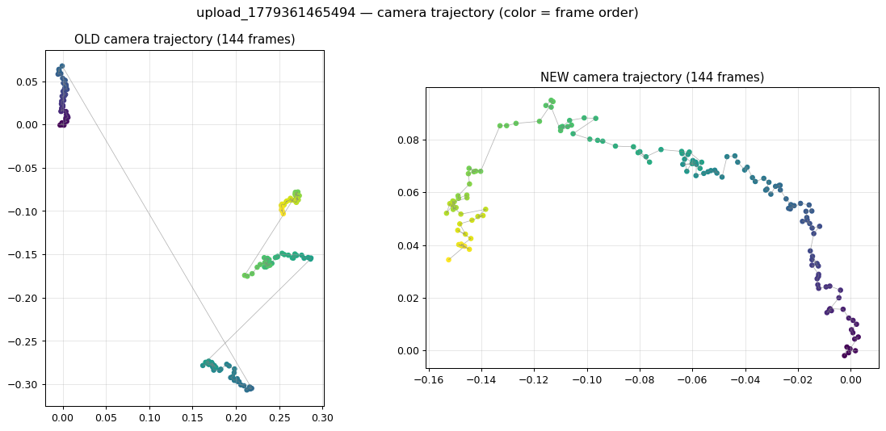
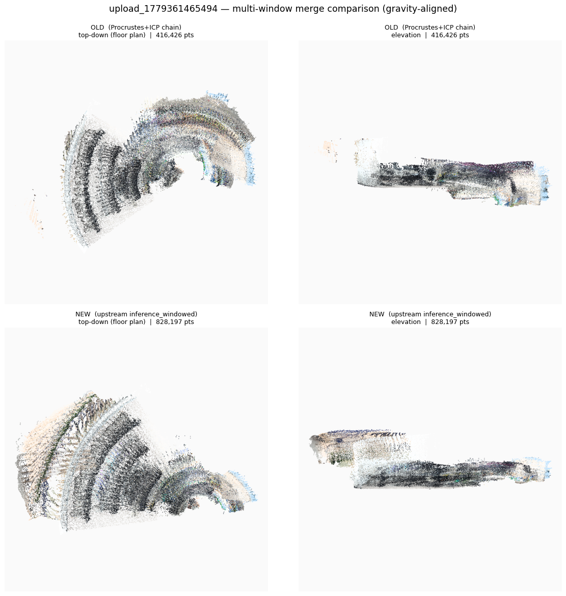
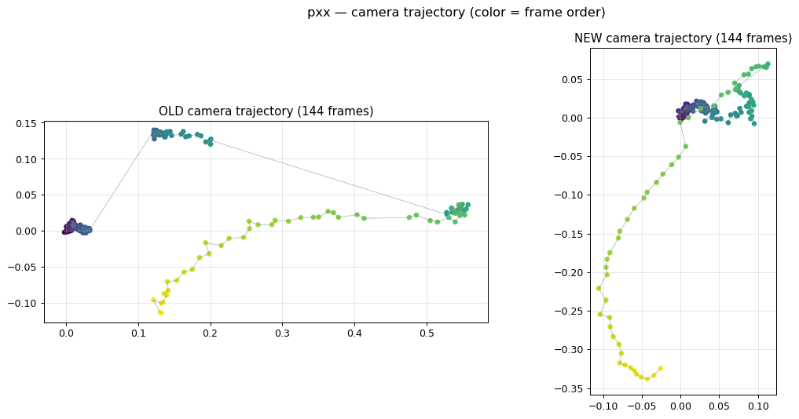
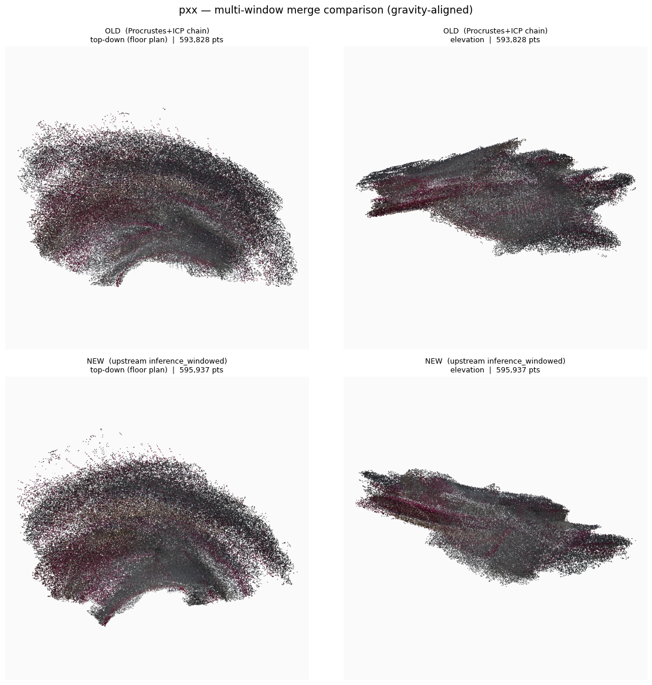

멀티윈도우 점군 병합 개선 검증
자작 Procrustes+ICP 봉합 → 상류 모델 내장 윈도우 추론(inference_windowed)
긴 영상에서 점군 병합이 깨지던 문제를, 상류 모델의 내장 윈도우 추론
GCTStream.inference_windowed 호출로 교체했습니다. 보유 영상 2종으로 기존(OLD)과 변경(NEW)을
동일 조건에서 비교 검증하고, 카메라 궤적과 점군을 캡처해 차이를 확인했습니다.
1. 개요
새 브랜치에서 병합 방식을 상류 호출로 바꾸고, 보유 영상으로 검증했습니다.
데모(demo.py)가 깔끔했던 이유는 “좋은 봉합 알고리즘”이 아니라 봉합을 모델에 맡기기 때문입니다.
AutoPM 브랜치는 그 일을 사람이 만든 16점 Procrustes + ICP로 대체해 깨졌습니다. 이번 변경은 다시 모델에 맡깁니다.
| 항목 | 내용 |
|---|---|
| 새 브랜치 | AutoPM-260612-upstream-windowed |
| 변경 파일 | realtime/inference_worker.py (+47 / −62) |
| 검증 하니스 | tools/windowed_recon_test.py (신규) |
| 환경 | RTX 5090 32GB · torch 2.10 cu128 · ckpts/lingbot-map-long.pt |
| 테스트 영상 | 업로드 13개는 동일 파일(md5 일치) → 고유 영상 2종으로 검증 |
2. 왜 기존(OLD) 병합이 깨졌나
긴 영상(>300프레임)은 한 번에 추론할 수 없어 여러 윈도우로 쪼갭니다. 문제는 그 윈도우를 “어떻게 다시 합치느냐”였습니다.
윈도우 4개] --> A2[윈도우별
inference_streaming
각각 독립 좌표계] A2 --> A3[Procrustes
카메라 중심 16점만] A3 --> A4[ICP 보정
rigid] A4 --> A5[윈도우 체인 누적
스케일 복리 오차] A5 --> A6[병합 결과
경로 점프 · 이중벽] end subgraph NEW["변경 (상류) — 내부 정렬"] direction TB B1[전체 균일 샘플] --> B2[model.inference_windowed
1회 호출] B2 --> B3[overlap = 다음 윈도우
scale frame 재사용] B3 --> B4[학습된 chunk_transforms
전역 일관 정렬] B4 --> B5[병합 결과
연속 경로 · 정합 표면] end
깨짐의 4가지 원인
- 독립 좌표계 — 윈도우마다 KV 캐시가 리셋되어 각자 다른 임의의 좌표계·스케일로 나옴
- 빈약한 적합 — Procrustes를 overlap 카메라 중심
16점에만 맞춤. 궤적이 거의 일직선이면 회전·스케일 추정이 불안정(ill-conditioned) - 복리 오차 — 윈도우별 스케일을 독립 추정해 체인으로 누적 → 뒤 윈도우로 갈수록 오차가 곱해짐
- 약한 수렴 — point-to-point ICP가 살짝 어긋난 local minimum에 고정 → ghost 표면
상류 저장소에는 검증된 멀티윈도우 정렬(inference_windowed)이 이미 있습니다. overlap 프레임을 다음 윈도우의
scale frame으로 재사용하고(bidirectional attention) 학습된 chunk_transforms로 합칩니다.
AutoPM 브랜치는 이걸 안 쓰고 고전적 Procrustes+ICP를 자작한 것이 회귀의 본질이었습니다.
3. 변경 사항
모델 클래스를 윈도우 지원 버전으로 바꾸고, 긴 영상 경로를 상류 1회 호출로 단순화했습니다.
| 구분 | 기존 (OLD) | 변경 (NEW) |
|---|---|---|
| 모델 클래스 | gct_stream.GCTStream | gct_stream_window.GCTStream |
| 긴 영상 추론 | 윈도우별 inference_streaming 따로 | inference_windowed 1회 |
| 윈도우 정렬 | 외부 chain_windows (Procrustes+ICP) | 모델 내부 (chunk_transforms) |
| 라이브 스트리밍 경로 | inference_streaming | 동일 (시그니처 호환, 유지) |
| 제거된 의존 | — | _run_window_raw, registration import |
핵심 코드 (긴 영상 경로)
// 기존: 윈도우별 추론 후 외부 봉합
for k in windows:
win = inference_streaming(window_k) # 각자 독립 좌표계
merged = chain_windows(wins, overlap=16) # Procrustes 16점 + ICP ← 깨짐
// 변경: 상류 내장 윈도우 추론 1회
preds = model.inference_windowed(
images, window_size=32, overlap_size=16,
num_scale_frames=16, keyframe_interval=1) # overlap=scale frame 재사용
# + 학습된 chunk_transforms 내부 정렬수정된 _run_windowed → _fuse_merged 경로가 유효한 LBP4 payload를 생성함을 직접 확인했습니다
(npts > 0, nposes = frame_count). 체크포인트는 missing=0 / unexpected=0으로 완전 호환됩니다.
4. 테스트 방법
공정한 비교를 위해 동일한 144 프레임으로 OLD/NEW를 돌리고, 같은 융합·렌더를 적용했습니다.
- 입력 — 동일 영상에서 144프레임 균일 샘플 (양쪽 동일)
- OLD — 윈도우별
inference_streaming+chain_windows(현 워커 방식) - NEW — 상류
inference_windowed(window 32 · overlap 16 · scale 16) - 공통 융합 — 깊이 역투영 → voxel 0.015m + radius outlier (양쪽 동일)
- 캡처 — 카메라 자세에서 중력축 추정 → top-down(평면도) · elevation(입면) ortho z-buffer + 카메라 궤적(프레임 순서 색상)
카메라 궤적의 색은 프레임 순서(보라→노랑)입니다. 정상이면 색이 하나의 연속 경로로 이어집니다. 병합이 깨지면 윈도우 경계에서 색이 다른 위치로 점프하고 회색 연결선이 화면을 가로지릅니다.
5. 결과 — 영상별 캡처
두 영상 모두 OLD에서 경로가 깨지고, NEW에서 연속·정합 복원됩니다.
점 개수 (OLD vs NEW)
윈도우 스케일 — OLD chain (1.0 기준)
| 영상 | 프레임 | OLD 점수 | NEW 점수 | OLD 윈도우 스케일 |
|---|---|---|---|---|
upload (문제 케이스) | 836 | 416,426 | 828,197 | 1.0 · 1.36 · 0.84 · 1.05 |
pxx (야외) | 408 | 593,828 | 595,937 | 1.0 · 0.98 · 1.08 · 0.60 |
① upload 영상 — 실제 문제 케이스 (836프레임)


② pxx 영상 — 야외 (408프레임)


OLD는 윈도우가 어긋나 같은 표면의 점들이 서로 다른 곳에 흩어집니다. 이렇게 흩어진 점은 이웃이 부족해
radius outlier 필터에서 대량 제거됩니다. NEW는 표면이 정확히 겹쳐 점이 살아남으므로 더 조밀합니다 —
점 개수 증가가 곧 정합 품질의 정량 지표입니다.
6. 결론
상류 inference_windowed 호출 방식으로 긴 영상의 병합 깨짐이 해소되었습니다. 두 영상 모두
카메라 궤적의 연속성이 회복되었고, 문제 케이스(upload)에서는 표면 정합도·점밀도가 약 2배로 향상되었습니다.
• 깨짐의 원인은 “자작 외부 봉합(Procrustes 16점 + ICP + 스케일 체인 누적)”이었다.
• 해법은 봉합을 모델 내부 학습 정렬에 위임하는 것 — 데모가 깔끔했던 것과 동일한 원리.
• 라이브 스트리밍 경로는 시그니처 호환으로 영향 없이 유지된다.
남은 과제 / 후속
- 전체 서버 스택(FastAPI + three.js 웹뷰)에서의 end-to-end 검수 — 본 보고서는 워커 경로 + 오프스크린 캡처로 검증
registration.py는 워커에서 미사용이 되었으나 비교 하니스가 참조 중 — 정리 시점 별도 판단- 변경 커밋 및 smoke 게이트(
coverage_web_smoke.py) 회귀 확인